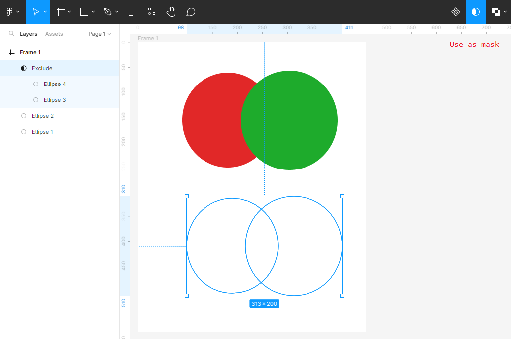

arrow_circle_up
Alapvető dolgok:
-
Logikai műveletek (logical operations): különböző alakzatokon, mint halmazokon végrehajtott
algebrai műveletek.
-
Egyesítés -
Union Selection
-
Kivonás -
Subtract Selection
-
Metszet -
Intersect Selection
-
Kizárás -
Exclude Selection
-
Egyesítés (Union Selection):
ebben az esetben két vagy több alakzat összes pontját
jelölöm ki. Ezért szín csak az egész alakzatnak adható.
-
Kivonás (Subtract Selection):
ebben az esetben csak kiválasztott elem pontjait jelölöm ki.
-
Metszet (Intersect Selection):
ebben az esetben csak a közös pontokat jelölöm ki.
-
Kizárás (Exclude Selection):
ebben az esetben minden pontot kiválasztok, amely csak egy
alakzathoz tartozik.
-
A Use as mask gomb segítségével
kontúrozhatjuk az alakzatokat, azaz leszedhetjük a
beállított színeket. Következő kattintással visszatesszük.

-
Tüntessük el egy alakzatról. Láthatjuk az eredeti alak
körvonalát.
Források:
Figma
Wikipedia